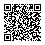

HOME Menu app
3dsDL.cia, installs with FBI

- Open FBI on your 3DS.
- Choose Remote Install, then Scan QR Code.
- Point the camera at this code and confirm.
- 3dsDL appears on the HOME Menu. Installing again later updates it in place.
Or grab the files directly: 3dsDL.cia · 3dsDL.3dsx
You need a 3DS running custom firmware (Luma3DS) with FBI or the Homebrew Launcher. Haven't set that up yet? Follow 3ds.hacks.guide first.
3dsDL.cia, installs with FBI

3dsDL.3dsx, runs from the SD card
sdmc:/3ds/3dsDL/ and choose Overwrite.sdmc:/3ds/3dsDL/3dsDL.3dsx on the SD card.Each release lists SHA-256 checksums in 3dsDL.sha256. Older versions are on the releases page.
Paste a direct download link, then scan the code with Scan QR Code in 3dsDL. Much nicer than typing a long link on the 3DS keyboard.
The code is made in your browser; the link isn't sent anywhere. It has to point at the file itself, so pages that need a login, a captcha or a "click to download" button won't work.
Every feature is a channel. Point at one to read about it.
Read a link from a QR code with the camera, or type it on the keyboard. Codes that aren't links are pointed out instead of ending the scan.
Certificates are checked against Mozilla's CA store, redirects stay on HTTP and HTTPS, and plain http links get a warning first.
Speed, time left, size and percentage, with free space checked before anything is written.
A dropped connection keeps what arrived. Retry, or Resume from History, carries on from there when the server confirms the file hasn't changed.
Rename keeps both as "file (1).zip", Overwrite rolls back if anything fails, Cancel leaves it alone. A finished download is never lost to an awkward name.
Presets like sdmc:/cias/ and sdmc:/3ds/, recent folders, a folder browser that can make new folders, or any path you type.
Off by default. Turn it on and 3dsDL offers to extract a downloaded ZIP into the same folder or a new one, refusing any path that would escape it.
The last 50 downloads with their links and where they went. Download one again, resume it or remove it.
Sleep mode is paused while a download or extraction runs, so closing the lid doesn't cut the Wi-Fi halfway through.
HTTPS fails when the date is wrong. 3dsDL compares the console's clock with internet time and sets it for the time zone you pick.
Certificate errors, links that won't download, where files go and other common questions.
3dsDL is free and open source. Every release is built by GitHub Actions; issues and pull requests are welcome.
Answers to the questions people run into most.
Almost always the console's date. Open Settings → Console clock in 3dsDL: it shows the console's time next to internet time and can set it for your time zone (the HOME Menu app can; the .3dsx may not be allowed to). Rosalina can also do it: L + Down + Select → Miscellaneous options → Update time and date via NTP. The error message also says why the certificate was rejected.
3dsDL only fetches links that start with http:// or https:// and point straight at a file. Pages that need JavaScript, a login or a confirmation click won't work, because 3dsDL isn't a browser. On GitHub, use the links under a release's Assets.
To the folder shown on the home screen, sdmc:/ unless you changed it. Use Folder on the home screen or on the confirm screen to pick a preset, browse the SD card or type a path. Settings and history live in sdmc:/3ds/3dsDL/.
Choose Retry in the error dialog, or find it later under History and choose Resume. 3dsDL continues from where it stopped when the server allows it, and starts over safely when it doesn't.
It downloads anything, including CIA files, which you then install with FBI. ZIP extraction is built in: turn on Settings → Offer to extract ZIP files and 3dsDL asks after each ZIP download.
Make the code bigger on screen (the Show bigger button above helps), hold the console still about 15 to 25 cm away, and avoid glare. If it still won't scan, use Enter URL instead.
The 3DS SD card uses FAT32, which can't store files that big. 3dsDL checks the size before it starts.
3dsDL verifies HTTPS certificates, refuses ZIP entries that would escape their folder, and never overwrites a file without asking. It is open source, every release is built by GitHub Actions from the tagged code, and checksums are published with each release.